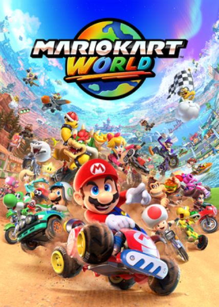

Racing · 2025
Mario Kart World
The kart racer opens its track list into one continuous island.

Cover: Wikipedia: Mario Kart World
Facts
- Released
- 2025-06-05
- Genre
- Kart Racer
- Category
- Racing
- Platforms
- Nintendo
- Developers
- Nintendo Entertainment Planning & Development
- Publishers
- Nintendo